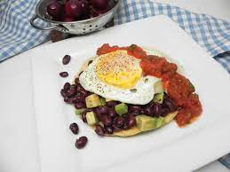

Breakfast Tostada

Description
A toasted tortilla topped with black beans, avocado, eggs, and salsa.
Ingredients
- 4 tostada shells
- 1 (15.25 ounce) can black beans, rinsed and drained
- 1 medium avocado, peeled and pitted
- 2 tablespoons lime juice
- 4 slices pepper jack cheese
- 1 tablespoon vegetable oil
- 4 eggs
- 1/4 cup salsa
- salt and freshly ground pepper to taste
Steps
- Divide tostada shells between 4 plates.
- Combine black beans, avocado, and lime juice in a bowl. Gently stir to combine.
Divide mixture between tostada shells. Top each tostada with a slice of cheese.
- Heat oil in a small skillet over medium heat. Crack an egg into hot oil. Cook for
two minutes. Flip and cook until set, two minutes more. transfer egg to top of one
of the prepared tostada shells. Repeat with remaining eggs.
- Top each egg with salsa. Season with salt and pepper to taste. Serve immediately.